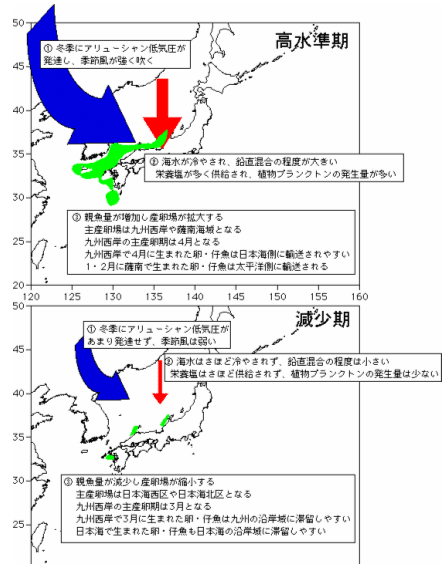

マイワシがなぜ大規模な資源変動をするのか完全に分かっていませんが、これまで蓄積されたデータをとりまとめて整理すると、冬季のアリューシャン低気圧が強く、季節風が卓越すれば九州西〜日本海の冬場の海水の鉛直混合が盛んになり、マイワシ稚仔魚の成長に影響するプランクトンが増加し、稚魚の生残率を高めると考えられます。水温など海洋環境の変化が産卵場や産卵期に影響を及ぼし、発生した卵や仔魚の輸送条件などが、マイワシの生残率に影響すると考えられます。卵・稚仔魚が一部の沿岸水域に滞留する状況よりも、日本海に広く輸送されることが生き残りがよいと考えられます。
マイワシの資源変動の要因についてのまとめ
